I run the study, read the data, and let it decide the interface. Two case studies below — each one opens as a deck you can arrow through in about three minutes.
Joyous Chat: two years, two versions, one feature cut
A journaling product that personalises prompts without pretending to know your personality. It began as a first-year team brief with a clinical partner; I reopened it alone in 2025 and removed the mechanic it was built on, because the science underneath it did not hold.
ResearchFlows & prototypeDesign system17 slides
Open the deck →
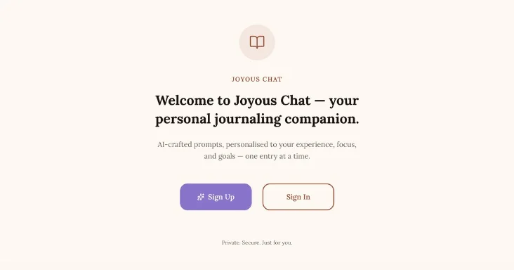
Brand system — design at scale
PScience.intnl: psychology, made scroll-stoppable
A content system carrying real psychological research to a Gen Z audience that decides whether to keep reading within one screen. I founded it, ran the audience research, and defined the system the visuals were built against.
UX Research Assistant · Sep 2025 – Apr 2026 · San Francisco
A between-subjects study of how background audio affects reading comprehension: 45 participants, a fast-paced podcast against melancholic instrumental. I scoped the questions with senior researchers, built every study material from stimuli to participant-facing screens, and piloted each version before live collection.
45
Participants, randomised
+20%
Usable-response rate, after piloting
Null
Result, reported — with two hypotheses for why
About — open to roles from autumn 2026
Behavioral science, pointed at interfaces.
I study cognition, brain and behavior at Minerva University in San Francisco, with a minor in neuroscience. Minerva moves students through seven countries, so I've designed for and tested with people well outside my own context — which is most of what design research is.
I was trained to design a study before I was trained to design a screen. That is why I removed the mechanic Joyous Chat was built around after it had already been approved. Testing is only useful if you're willing to lose.
Craft came the other way round: a brand and graphic design course at Design Express, where I built identities end to end — logos, type, palettes, packaging and high-fidelity mockups — which is where the systems thinking in PScience came from.
Interviews · Usability Testing · Study Design · Data Analysis · User (target audience) Researxh
Languages
English · Russian · Kazakh
{{ deckTitle }}
{{ counter }}
Case study 01 · Product design, end to end
Two years, two versions, and the feature I had to cut.
Joyous Chat began as a first-year team brief with a real clinical partner. I reopened it alone two years later and took out the mechanic the whole thing was built on.
Phase 1 · 2023–24
Team of five, civic partner, committee-approved
Phase 2 · 2025–now
Solo rebuild, in build
My role
Team designer & researcher, then sole designer & researcher
Scope
Research, flows, prototype, design system
2023 · how it started
It was not my idea. It was an assignment.
First year at Minerva, a mandatory team project: five of us, placed with a civic partner and told to answer one question. Our partners were Sharon Niv, founder of a mental health company, and Dr. Dana.
Neither of them wanted a product demo. They wanted an answer to an access problem — therapy works, and most people who need it cannot afford the hours.
The team
Five students, one civic partner, two semesters
I worked the concept, the flows and the interface
The constraint
It had to be defensible to clinicians, not just usable
Which is why every mechanic used a citation behind it
The brief
The challenge question
How might we use AI-powered tools to increase people’s access to mental health support while reducing the cost barrier?
Our answer was journaling. It has a real evidence base for emotional processing, it costs little to do, and it needs no clinician in the room — which is exactly what an access problem asks for. The gap was that unguided journaling has a brutal drop-off rate.
The clinical basis
Two frameworks, doing two different jobs
Internal Family Systems gave us a vocabulary for the parts of a person — the Self, and the managers, exiles and firefighters around it. That is what a prompt can point at.
Mindful Self-Compassion set the stance: explore a feeling without judging it, and recognise it as common to people rather than a personal defect.
IFS — what to ask about
The Self · Managers · Exiles · Firefighters
MSC — how to ask it
Mindfulness · Self-compassion · Common humanity
Together
They were the training material for the prompt model, not features in the UI
The user never sees either name
The 2023 mechanic
Personality was going to be the engine
Onboarding ran a Big Five inventory and an Enneagram type test. The predicted type chose the journaling style, and the type’s core fear became the hook the prompt was written around.
Worked example
The Helper → core fear of being unloved
“How might you console a teenager who feels unlovable?”
Worked example
The Achiever → core fear of failure
“Can you elaborate on the ways you are valuable to your family, friends or coworkers?”
Why we believed it
It produced prompts that felt specific, and it gave reviewers something concrete to evaluate. Both turned out to be the wrong reasons.
Artifact · the 2023 pipeline
What we proposed, end to end
The previous ten entries fed back into generation through the API, so prompts drifted with the person over time. Entries were stored offline on the device — no server copy, no access without the patient’s permission.
Rebuilt here from the proposal flowchart. Everything downstream of that second box depended on the personality test being real.
Cut one · before we built anything
We took the conversation out of the chat
The concept started as a two-way AI chat. We removed the second direction deliberately: conversational framing humanises the model, invites emotional dependency on software, and opens a path for it to give therapeutic advice it is not qualified to give — to people who are, by definition, vulnerable.
What shipped was one-directional. The app writes a prompt; the person writes their own answer. Nothing evaluates or assesses them back.
Also on the record
Entries never leave the device, and we held IRB permission before testing with anyone.
Privacy and safety were design constraints from the first week, not a compliance pass at the end.
End of the group phase
Approved — demo, prototype, symposium
We built a working demo and a prototype, walked the stakeholders through the flow, and closed the group phase at the final symposium. It passed an academic committee, earned course credit, and lifted user-reported helpfulness from 70% to 85% across 60+ product tests.
That is where it would normally end: a good grade, a tidy case study, a slide about impact.
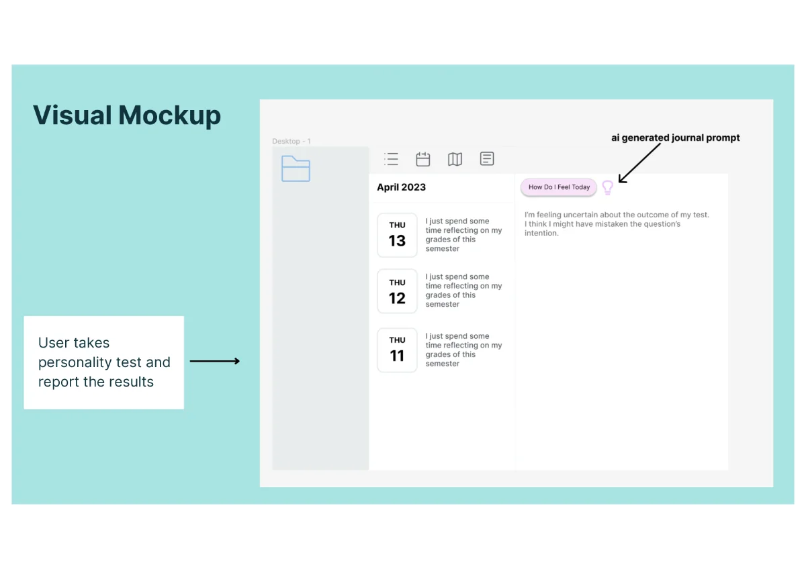
The entry point. The promise on this screen is the one the rest of the product has to keep.
2025 · phase two
I picked it up again, alone, with a harder bar
Two years later I reopened the project on my own. The first version had been validated against what reviewers found convincing. That is not the same as working.
Phase 1 goal
Helpful and accessible
Phase 2 goal
Effective
So I ran 40 fresh interviews and a 30-response survey before touching the design.
Cut two · the one that cost me
I removed my own core mechanic
The personality test had to go. Inventories like the Big Five and the Enneagram have weak predictive power for the thing we were using them to predict — what a specific person is struggling with this week — and the tailoring effect downstream was correspondingly thin.
Worse, building personalisation on top of them lends the product an air of science it has not earned. A journaling app for anxious people is the wrong place to overclaim.
Keeping it would have been easier, and it demos better. Everything downstream of it had to be rebuilt.
What replaced it
Ask people what is wrong instead of guessing who they are
Before — 8 questions, Big Five
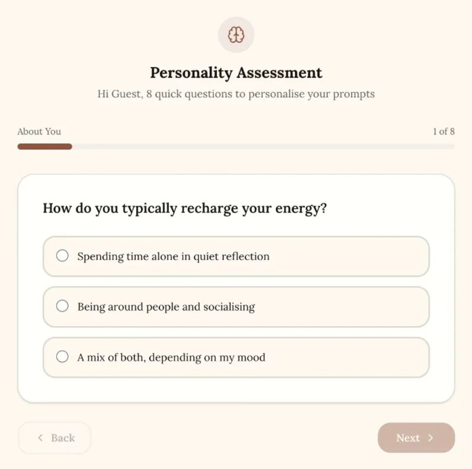
After — 14 questions, pain points
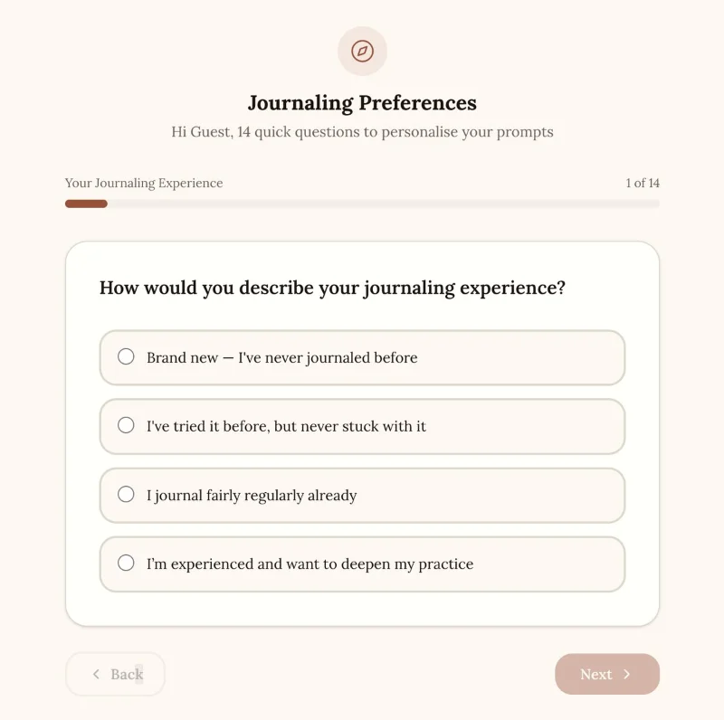
The new questionnaire targets three things a person can actually tell you: the problem they want to work on, how much journaling they have done before, and what they want out of it. It is longer, and I took that cost on purpose — a slower question answered honestly beats a faster one whose output I cannot justify.
The new direction
From a better prompt to a habit that outlives the app
Phase one asked what makes a good prompt. Phase two asks what makes someone still be writing in March. That reframing pulled in a different literature entirely.
Motivation
Why someone opens it on day nine
Habit formation
Cue and routine — what makes it stick without a streak counter
Journaling efficacy
Which kinds of writing help, and which do not
Nudging
Prompting without nagging or guilt
Behaviour architecture
Making the next action the easiest thing on the screen
The product is no longer a prompt generator. It is a platform that teaches one skill: how to self-help on paper.
Then · now
The same product, rewired
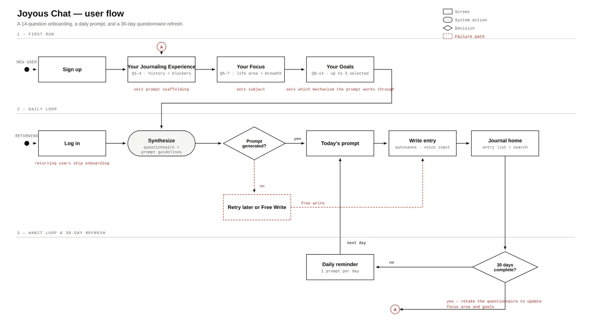
Removed
The personality test, and everything that inferred a person from it
Replaced by
A questionnaire about the problem itself — what they want to work on, and how much writing they have done
Added
A failed generation falls through to Free Write, and a 30-day refresh reopens the questionnaire
The interface · onboarding
Fourteen questions, three named sections, one progress bar
1 · Experience — sets scaffolding
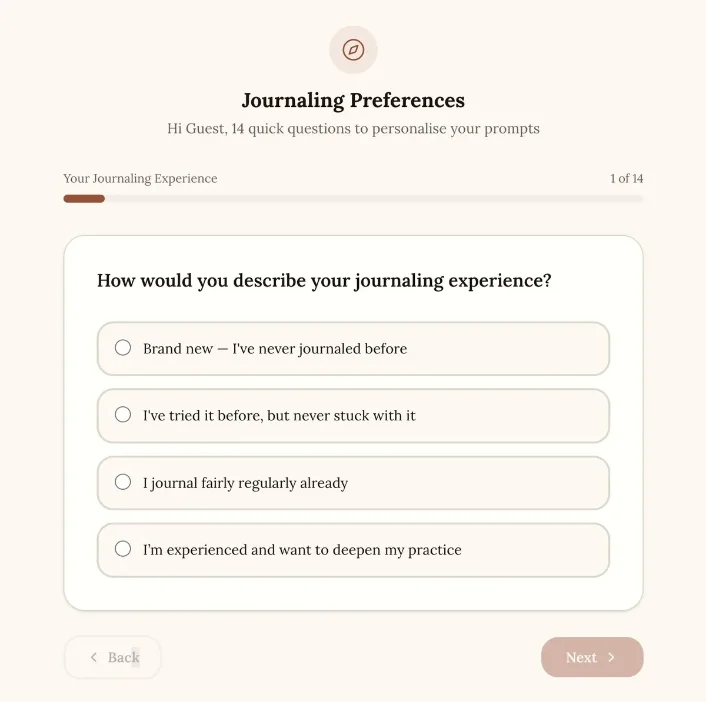
2 · Focus — sets subject
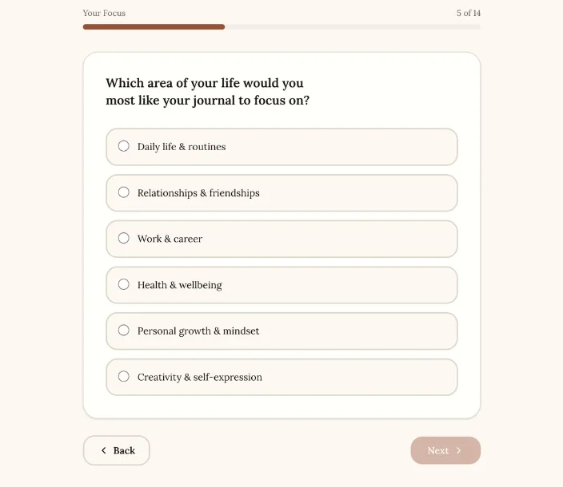
3 · Goals — sets mechanism
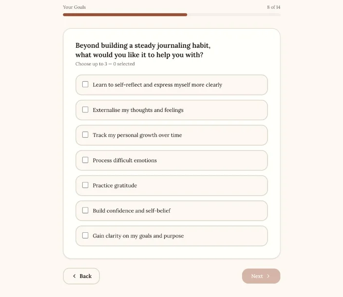
Fourteen questions is a long way to walk before you have seen anything. Every one has to earn its place by changing an output — and the flow has to keep proving it is going somewhere.
The interface · the daily loop
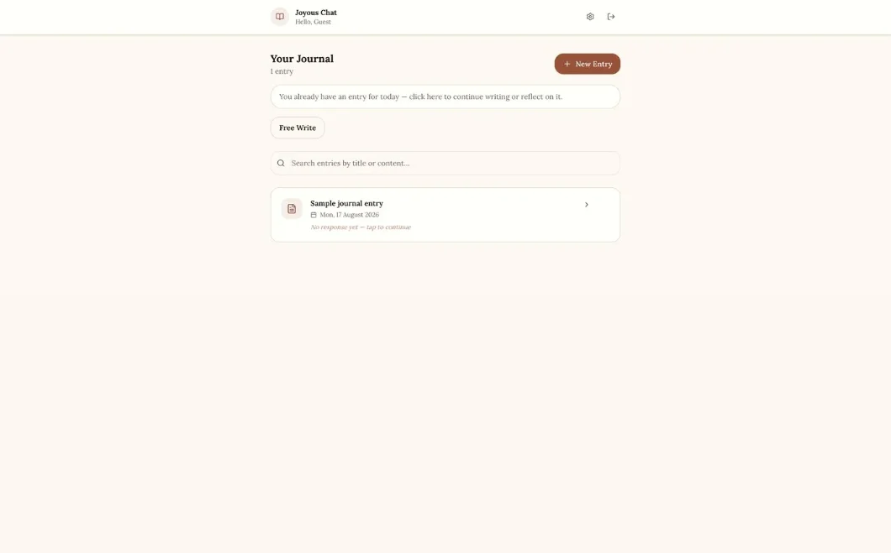
Journal home. Free Write sits directly beside the daily prompt. The prompt is the default path but must never be the only one — on a day when it does not fit, the alternative has to be one tap away or the habit breaks.
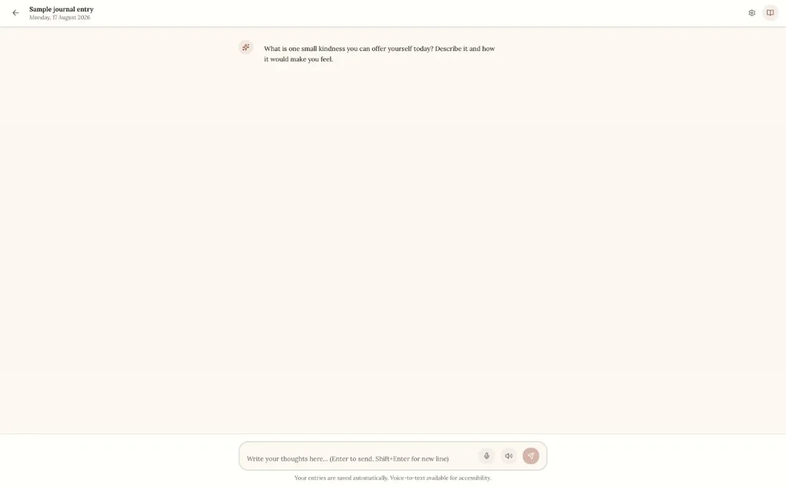
Prompt and composer. One generated prompt, then deliberately empty space. The product exists to solve the blank page — so the page is only blank after you have been given something specific to answer.
Accessibility
Readability is set by the user, not assumed
High-contrast mode, light and dark themes, and a three-step text scale — built in rather than retrofitted. A journaling product is read for long stretches by people who are often tired at the time.
The same panel carries the monthly retake, so the personalisation stays correctable instead of being fixed at signup.
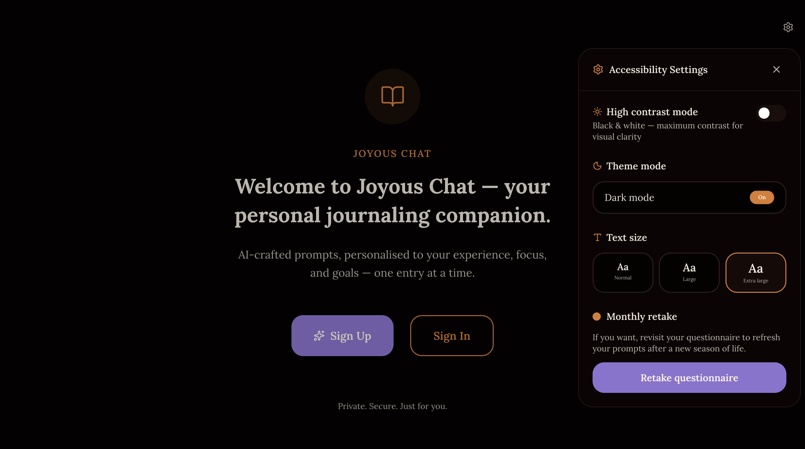
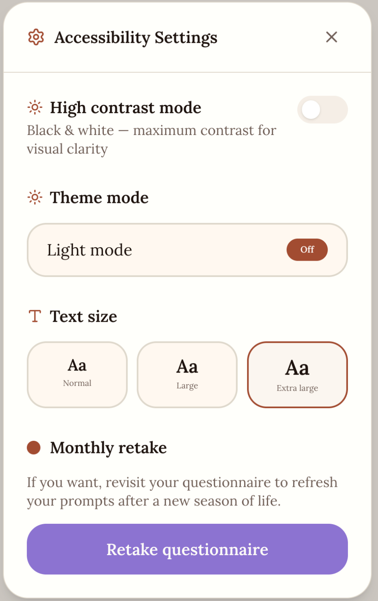
Where it stands
The measure of this product is whether someone still journals after initial motivation and impulse wears off.
Phase two is live as a public site with a partially complete prototype; the prompt model is in training. Presenting to a committee was the first time I defended a design decision to people outside design. Removing it two years later was the second, and the harder one.
PScience.intnl — real psychological research, built for a Gen Z audience that decides whether to keep reading within one screen.
Role
Founder & project lead
My scope
Audience research, content system, art direction
Team
20 researchers, designers, writers
Post design
Fyliy, lead designer
Outcome, up front
30,000+ people across Central Asia.
Reached across TikTok and Instagram, with the audience extending across Kazakhstan, Kyrgyzstan, Uzbekistan and wider Central Asia. Selected for the CAYLA Social Innovation Exhibition — an 11% acceptance rate.
30K+
Users reached
11%
CAYLA acceptance rate
20
Team members led
4
Countries in the audience
The problem
Rigour or reach, not both.
Psychology content online sits at two extremes: dense academic writing nobody outside the field reads, or life-hack posts with no rigour behind them. I wanted a visual system that could carry defence mechanisms, attachment styles and communication research in a format built for a nine-second scroll.
Hierarchy and pacing had to do the work a headline usually does, because the reader decides on the first screen.
Constraint
A nine-second attention window
Audience
Gen Z, non-specialist
The system
One structural logic, every post
My research established what the audience needed and in what order they would accept it. That became a content system every post was built against, which Fyliy — the project's lead designer — then executed and refined.
01
A high-contrast opening card names the concept in one line
02
Body cards alternate ground and figure colour, pacing the read like a comic strip
03
A recurring bridge card — "so what follows from this?" — carries the reader from problem into consequence
04
The closing cards give the reader something to do, not a summary
One carousel, in sequence
Cover, definition, two consequences, a closing action
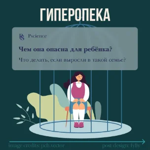
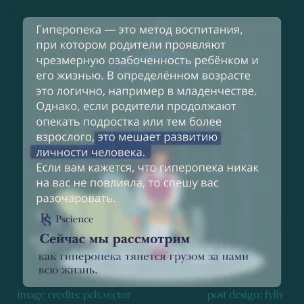
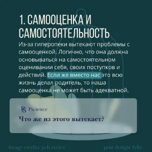
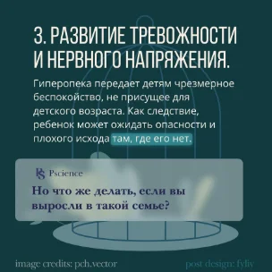
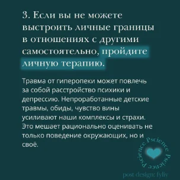
Colour weight and card role are fixed, so the reader can tell how heavy a post is before reading a word. Post design by Fyliy; illustration by pch.vector under licence.
Colour, assigned by weight
Maroon and teal for trauma and defence mechanisms; lighter tones for everyday relationships
Base — grounds, standing in for black
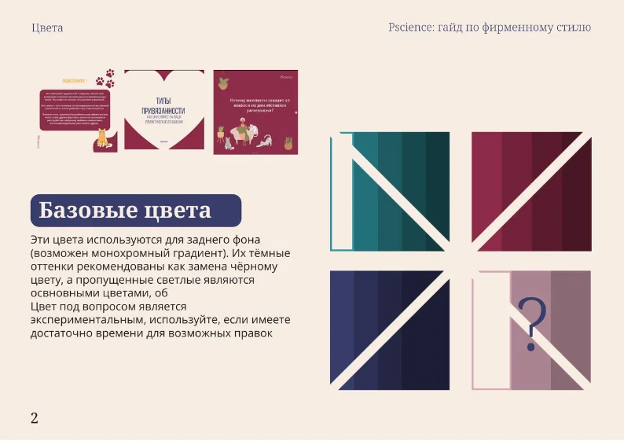
Accent — held back for emphasis
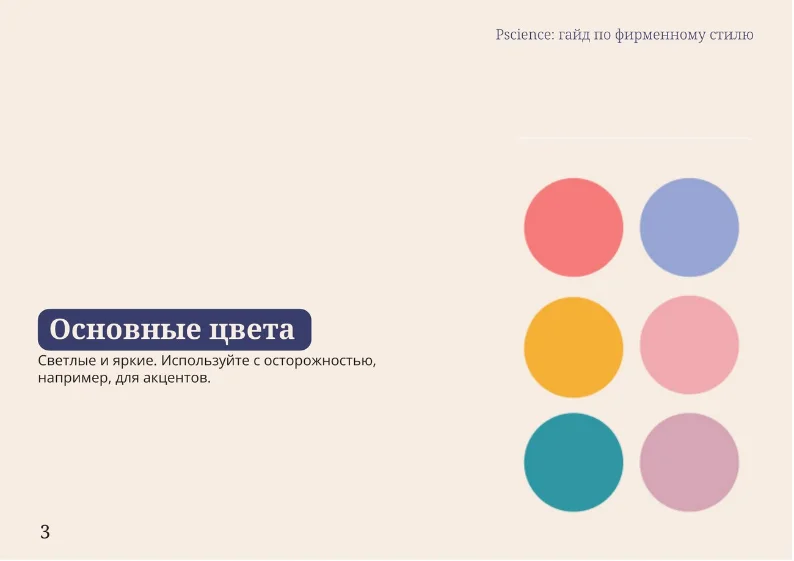
Twenty people were publishing from this guide — rules had to be explicit enough that a writer with no design training could not accidentally break the brand.
Mark and type
One family, one alignment rule, a fixed set of lockups
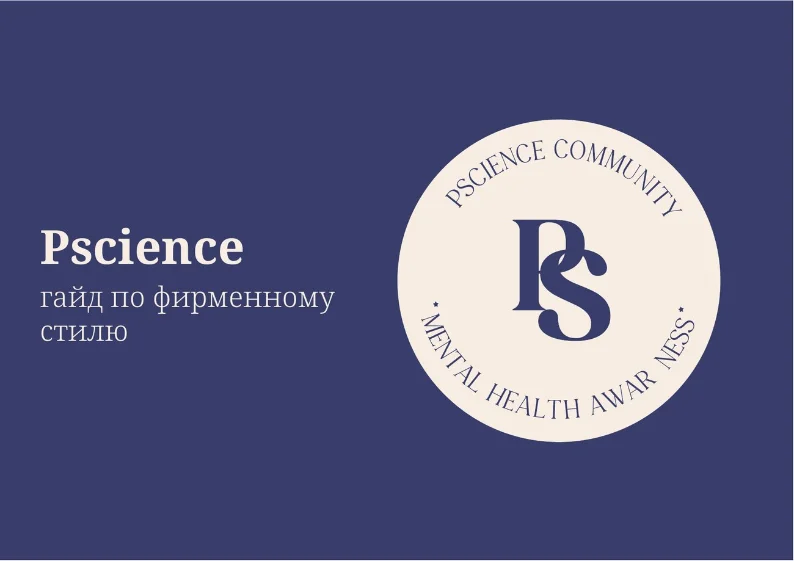
Identity and lockups
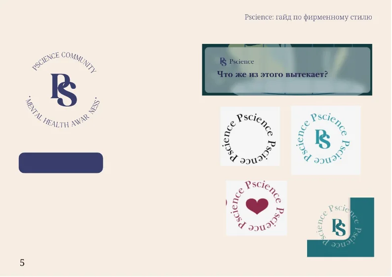
Noto Sans, left-aligned
Consistency across 30,000 readers came from constraints written down, not from taste held in one person's head.
Leadership · 20 people, 3 disciplines
A system that survives other people's hands
With twenty people across research, writing and design, the system could not live in one person's files. We worked from templates and a published brand guide rather than one-off documents, so a writer or researcher could produce an on-brand post without waiting on a designer.
My job was holding the standard across the whole output, not drawing every card. I also ran continuous community listening in a moderated Telegram group, coding recurring member pain points into themes that set the content roadmap.
The test of a system isn't whether it looks right when I use it. It's whether it holds when twenty other people do.
Credit where it belongs
What was mine, and what wasn't
I defined the audience and its unmet needs, set the content system and the colour logic, and held the standard. Fyliy designed and refined the posts against it. Twenty researchers, writers and designers published from the guide.
Mine — audience research, content system, colour logic, art direction, team leadership
Fyliy — lead designer; post design and refinement
The team — 20 researchers, writers and designers publishing from the guide